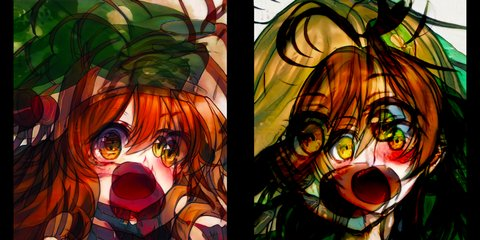

by Athena Novo · Async Art Master #4545 · day/night · time rule: UTC
Updates twice a day to reflect day / night cycles.

Day 06:00–18:59 · Night 19:00–05:59 (UTC)
The full-size files live on IPFS; each is linked on three public gateways, in the order to try them (gateway.pinata.cloud, ipfs.io, dweb.link). Every line says what our own check found: 3 not pinned by us yet, 1 our own copy, pinned here and verified on upload.
QmQ71YzmZQYVtx… gateway.pinata.cloud · ipfs.io · dweb.link — not pinned by us yet, checked 2026-09-23 09:13QmQpQxJ6uxFJpd… gateway.pinata.cloud · ipfs.io · dweb.link — not pinned by us yet, checked 2026-09-23 09:13bafybeiennqxvx… gateway.pinata.cloud · ipfs.io · dweb.link — our own copy, pinned here and verified on upload, checked 2026-09-22Qma2kveRxVMiK2… gateway.pinata.cloud · ipfs.io · dweb.link — not pinned by us yet, checked 2026-09-23 09:13QmQ71YzmZQYVtx… gateway.pinata.cloud · ipfs.io · dweb.link — not pinned by us yet, checked 2026-09-23 09:13QmQ71YzmZQYVtx… gateway.pinata.cloud · ipfs.io · dweb.link — not pinned by us yet, checked 2026-09-23 09:13QmQpQxJ6uxFJpd… gateway.pinata.cloud · ipfs.io · dweb.link — not pinned by us yet, checked 2026-09-23 09:13Scream Out Silent Anime #1 by Athena Novo Part of a group of evolving animes screaming out silently. Created December 2021. Two images in a cycle. Minted on Async Art.
async.art · OpenSea · Etherscan
Generated archive pages. Content identifiers point to the public IPFS network.